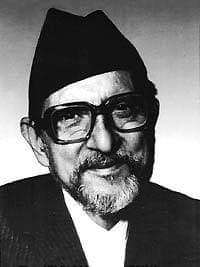

 Bisheshwar Prasad Koirala (BP)-One of the most well-read and thoughtful writer of Nepalese literature B.P. was also attracted to politics from an early age. As a young student, he was involved in the fight against the British regime in India. Later on, he fought against the Rana regime in Nepal and after its overthrow, he was appointed the first prime minister of Nepal. B.P. was also against the Panchayat system. For this, he was jailed for eight years at Sundarijal. During this time, he wrote some of his best works. In time, his political beliefs grew strong and he passionately wanted to give Nepal a new vision. Through his political activities, he met Mahatma Gandhi, Jawahar Lal Nehru, King Tribhuwan, King Mahendra, King Birendra, and Mao Sedong among others. In 1930, the British Raj charged him and his brother Matrika Prasad Koirala for having contacts with terrorists. They were arrested and set free after three months. Due to this, his father wanted B.P. to study in Calcutta at Scottish Church College. Krishna Prasad Koirala also felt that his son would receive better opportunities in a big city. B.P. unwillingly joined the college because personally he felt that the city was too big and far away from home. Towards the end of 1930, he left the college and returned to Banaras. In 1932, he completed his intermediate level of studies. His father again insisted that his son join Scottish Church College in Calcultta. So for the second time, B.P. joined the college but left it soon after. In 1934, he completed his bachelor's degree in economics and politics from Banaras Hindu University. Meanwhile, Chandra Shumshere Rana died and B.P.'s father returned to Nepal. B.P. joined Law College in Calcutta for his postgraduate studies. Around this time, he married Sushila Koirala. In 1939, B.P.'s first story in Nepali "Indrabadan" was published in a monthly paper Sharada. The story immediately gripped the attention of many people and sent shockwaves throughout the literary circle of Nepal. The story was experimental, unconventional and unlike most previous Nepali stories that are based on myths and are symbolic, "Indrabadan" addressed issues that are still taboo in Nepalese society. It also has psychological and experimental aspects to it. Koirala often said that his writings were heavily influenced by the works of Sigmoid Freud. Most of his writings feature Nepalese women as the protagonists and one can read about their personal experiences. His important works are "Doshi Chasma", "Sumnima", "Tin Ghumti", "Narendra Dai", "Modi Ain", "Hitler Ra Yahudi", and "Babu-Aama-Ra-Chora". During his stay in Banaras and later on in life, B.P. read a lot and enjoyed the works of Anton Chekov, Andre Gid, Charles Dickens, Robert Browning, Keats, Wordsworth, Hemmingway, Rabindranath Tagore, and others. He used to say that his style was influenced by the Russian writer Anton Chekov. He felt that Tolstoy was the greatest literary personality of the world and considered Bal Krishna Sama and Laxmi Prasad Devkota as the great writers of Nepal. An interesting aspect of B.P.'s works is that one does not find politics influencing his writings. Although a passionate politician - he was bound to conventional rules and norms of society - he hardly wrote about the constraints of his real life. It seems B.P. was able to place his feet in two different boats and bring both of them successfully to the bank. He once said: "I am one person in politics and a completely different person in literature. In this way, I feel that the two persons inside me are doing two different things and that they have never met. Politics has never influenced my writing." B.P. suffered from throat cancer and died in 1982 in Kathmandu.